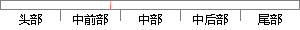

同时主机可向开发板发送数据，开发板也可接收主机发来的数据。
片段位置图

相似结果
相似片段：75 图6-18全速主机控制器向下行端口发送数据包???....77 图6-22410开发板与FPGA验证板的背面图???.77...表示端点0的OUT方向缓冲区已经接收完了主机发来的...
| 标题 | 《USB2.0 OTG IP核全速主机控制器研究与设计》 |
| 对比库 | 中国学位论文全文数据库 |
| 作者 | 廖文兵 |
| 机构 | 电子科技大学 |
| 分类 | 信息与通信工程 |
| 年份 | 2008 |
| 相似率 | 83.33% （严重抄袭） |
※ 片段修改建议 ※
近似词参考：- 接收：领受 吸收 接管
系统自动生成语句：同时主机可向开发板发送数据，开发板也可领受主机发来的数据。
注：本片段修改建议为系统自动生成，仅供参考。